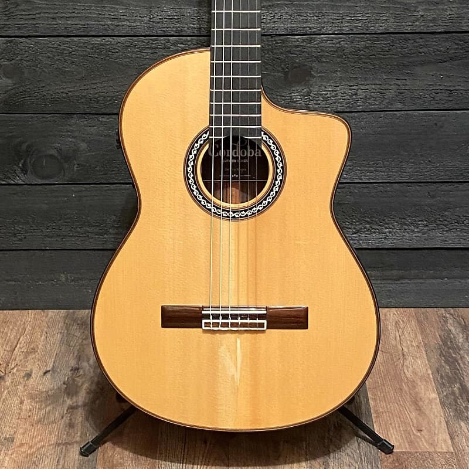
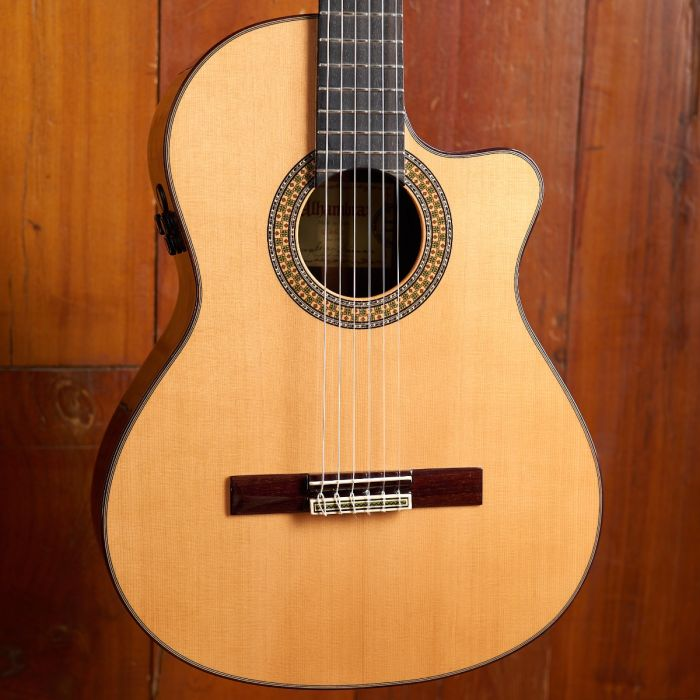
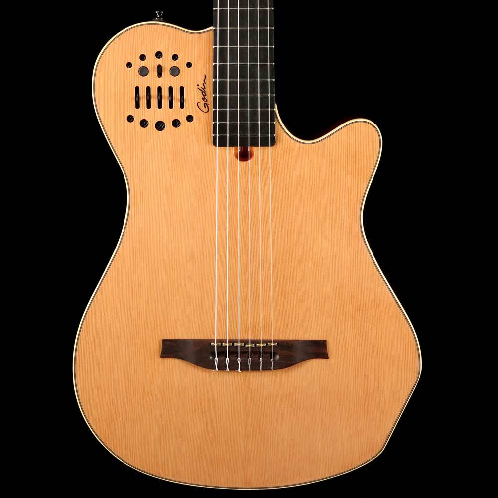

Classical Selection
Most of our guitars come in natural finish but at special request we can order custom colors.



- Item: Cordoba GK Pro Negra Nylon String Acoustic-Electric Guitar - Spruce
- Description: 6-string Acoustic Nylon-string Classical Guitar with Solid Indian Rosewood Back
and Sides, and Solid European Spruce Top - Natural - Price: $1,500

- Item: Martin Alhambra 9 P CW E8 Acoustic-electric Classical Guitar - Natural
- Description: Nylon-string Acoustic-electric Guitar with Cedar Top, Rosewood Back and Sides,
Cedar/Ebony Neck, and Ebony Fingerboard - Natural - Price: $3,000

- Item: Godin MultiAc Grand Concert SA, Nylon String Acoustic-Electric Guitar - Natural
- Description: Nylon-string Acoustic-electric Guitar with Cedar Top, Mahogany Grand Concert Body
and Neck, Richlite Fingerboard - Natural - Price: $2,000